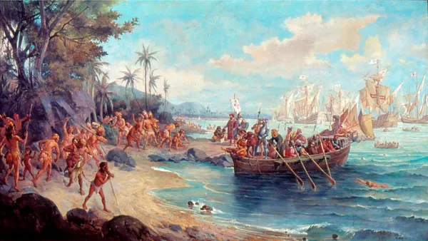

Para os historiadores, não houve descoberta do Brasil. A ideia de descobrimento do Brasil se consolidou na historiografia como forma de se referir à chegada dos portugueses ao Brasil em 1500. Essa ideia tem sido bastante criticada nas últimas décadas e considerada eurocêntrica, afinal o Brasil não era um território inabitado nessa ocasião.
Muitos historiadores utilizam a ideia de achamento, e muitos consideram que o termo “invasão” é o mais apropriado para se falar da chegada dos europeus ao nosso continente. De toda forma, o território brasileiro já era habitado pelos povos indígenas, e acredita-se que eles teriam se estabelecido no território brasileiro cerca de 12 mil anos atrás.

A chegada dos portugueses aconteceu em 22 de abril, mas foi somente em 23 de abril que os primeiros portugueses desembarcaram nas terras brasileiras. Um pequeno grupo liderado por Nicolau Coelho foi enviado para fazer o reconhecimento da terra e manter os primeiros contatos com os indígenas.